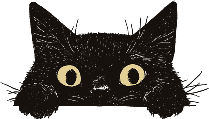

동료를 차즘
 그림 · 재현
그림 · 재현
☞ 사진 속 이불을 눌러 보시오
- 나이
- 불문. 단, 자정 넘어 눈이 반짝이는 자
- 인상
- 밤눈이 밝고, 낡은 신문 냄새를 조와함. 차를 물처럼 마심
- 버릇
- 마감 전날이면 행방이 묘연해짐. 마감 당일엔 더 묘연해짐
- 간 곳
- 제이집 제작실로 갓스리라 짐작함. 혹은 이불 속
이 사람을 아시는 이, 혹은 이 사람이 당신이면 본사로 통지하시오. 후사함(후사는 크레딧 한 줄 · 식은 차 한 잔 · 편집장의 고개 끄덕임 한 번)
 그림 · 재현
그림 · 재현심인 광고 · 사람 찻는 광고
녯 신문 광고란에는 집 나간 이를 찻는 「심인」 광고가 실렷소. 경성야록도 사람을 찻소. 이번엔 우리 쪽에서.
심인 · 급고
심인 · 일
그림 · 재현☞ 사진 속 이불을 눌러 보시오
이 사람을 아시는 이, 혹은 이 사람이 당신이면 본사로 통지하시오. 후사함(후사는 크레딧 한 줄 · 식은 차 한 잔 · 편집장의 고개 끄덕임 한 번)
심인 · 이
그림 · 재현☞ 사진 속 물건을 눌러 단서를 모으시오 · 단서 0/4
이 사람을 보신 이, 혹은 이 사람이 당신이면 본사로 통지하시오. 후사함(후사는 새 사건 소식 한 통. 광고 편지는 아니오, 맹세하오)
※ 심인 광고의 틀(인상 · 간 곳 · 후사함)은 1920~30년대 동아일보 광고란에서 빌렷소. 이 면의 광고는 모두 경성야록이 지어 낸 것이오 (재현). 통지는 화면 시연용이며 실제로 접수되지 안소.
현상 수배 · 광고면 맨 아래 · 마지막 한 장
 그림 · 재현지문 채취 · 대조 불가
그림 · 재현지문 채취 · 대조 불가현상 수배 · 제 이백륙십팔 호 죄목 — 활자 「ㄱ」 절도 · 편집장 의자 점거 · 원고 우 낮잠. 사례 — 멸치 한 줌. 수배 사진을 누르면 지문을 뜨고, 그 놈의 산책길이 열리오.
심묘한 산책 — 수배 고양이 심묘의 눈으로 걷는 경성. 산책 따라가기 →